Actual localhost:8081 captures, November 8, 2026. No notebook was saved and no query ran. Markdown appears only in an unsaved browser draft.
Delivery evidence and boundaries · Original layout concept
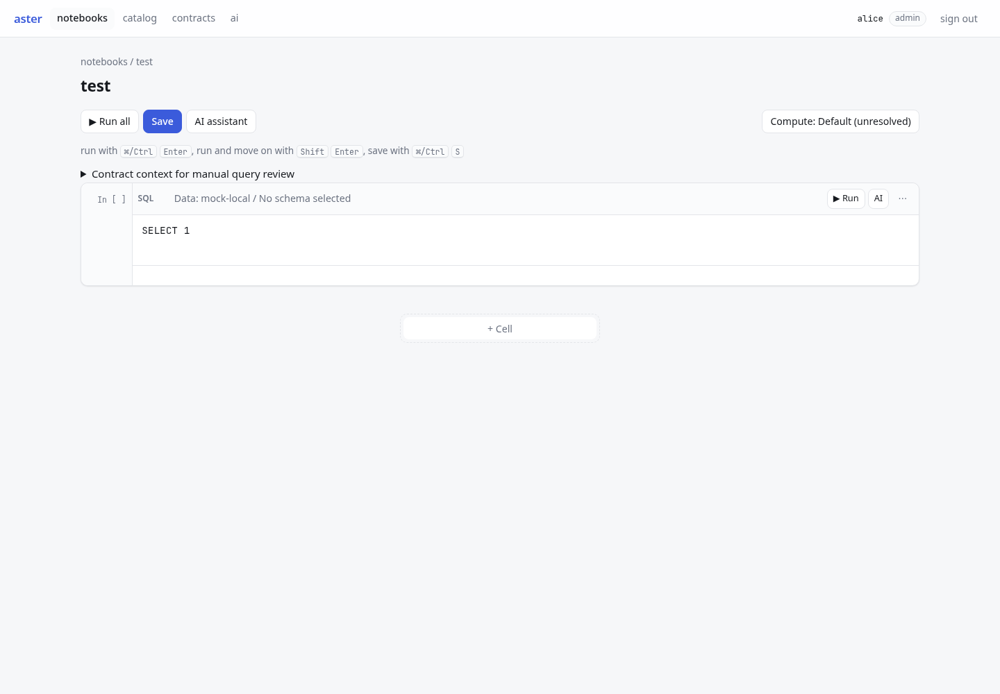
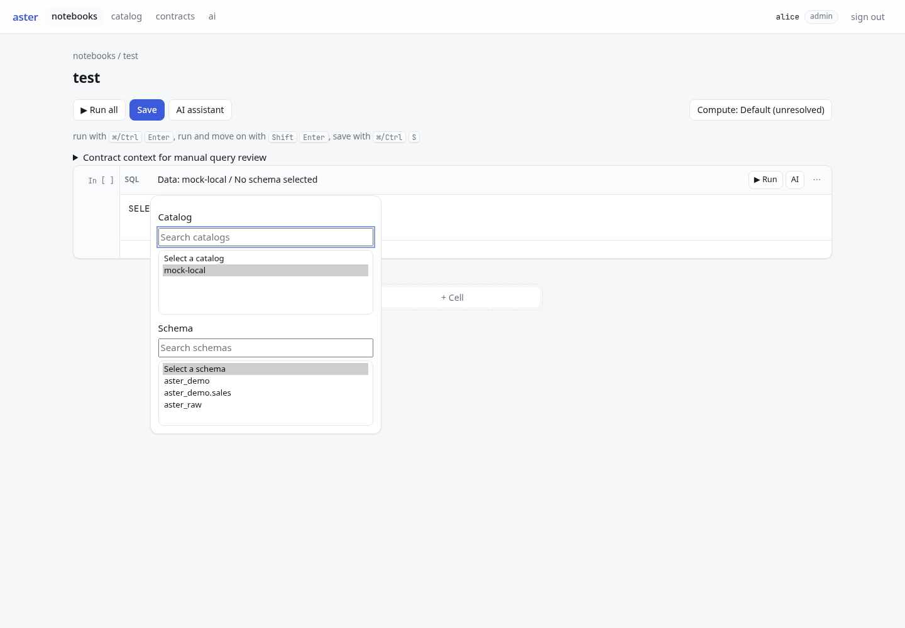
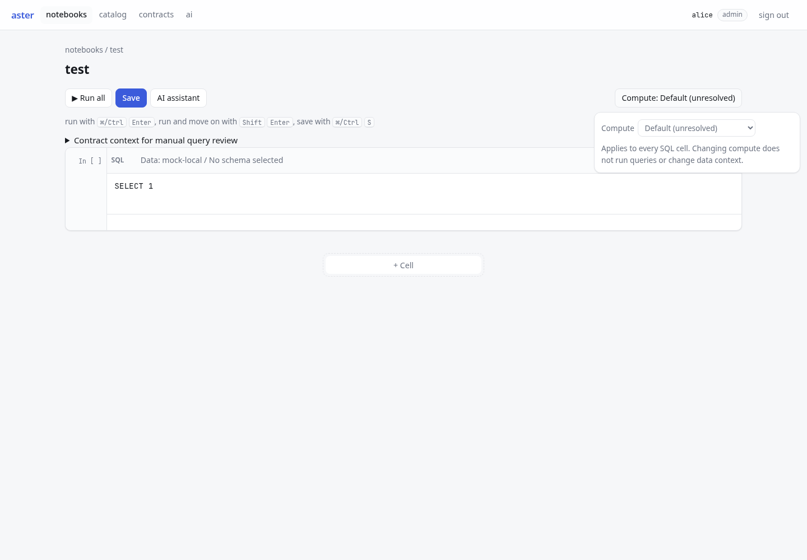
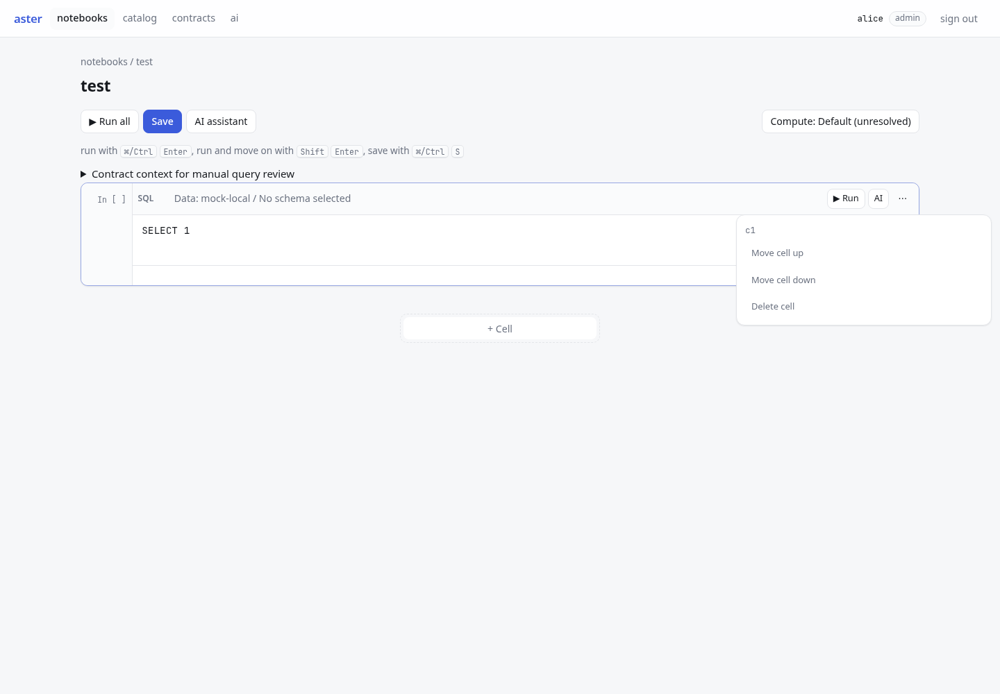
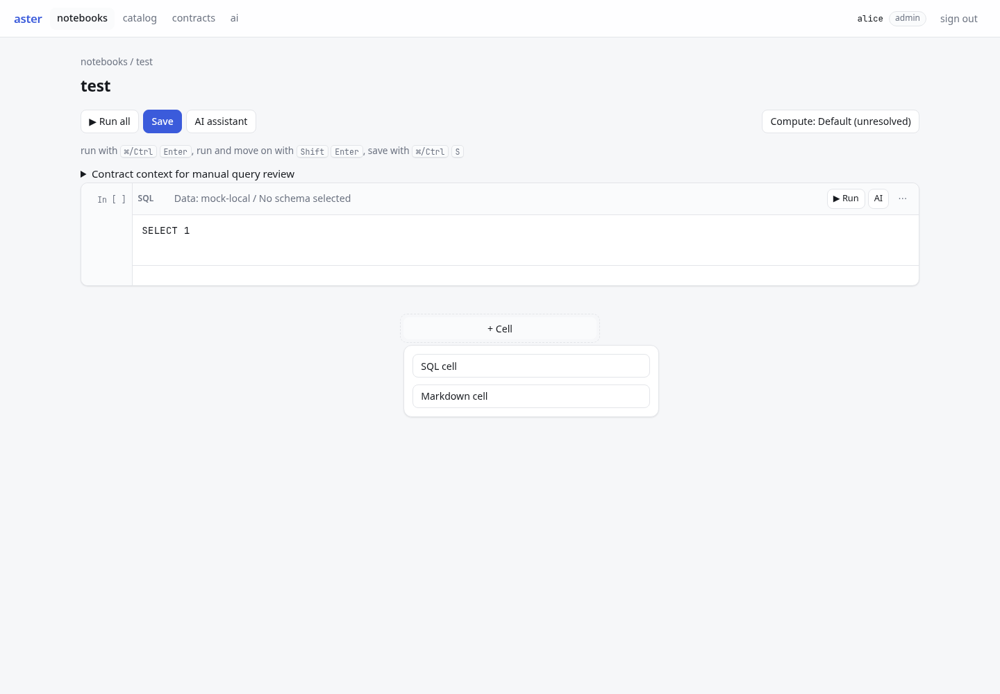
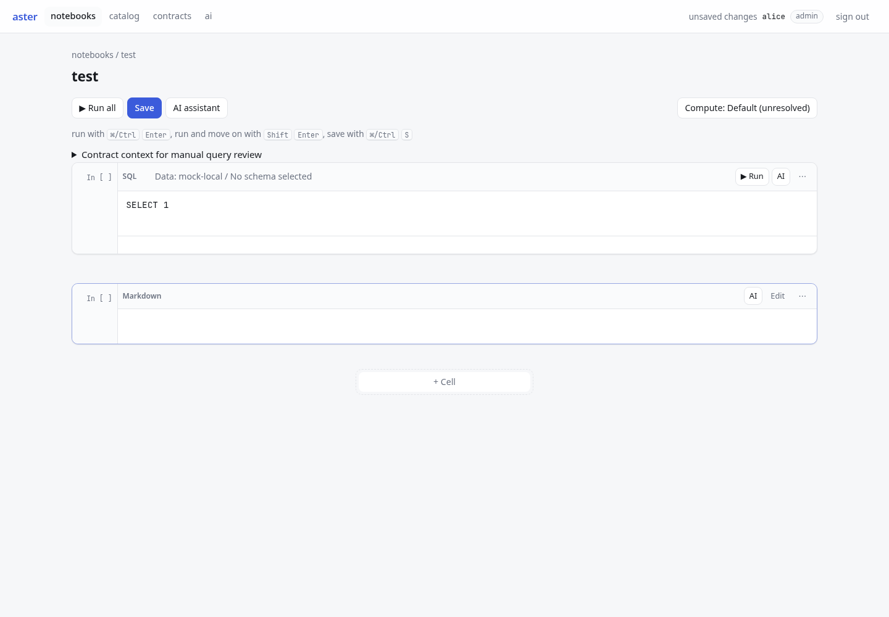
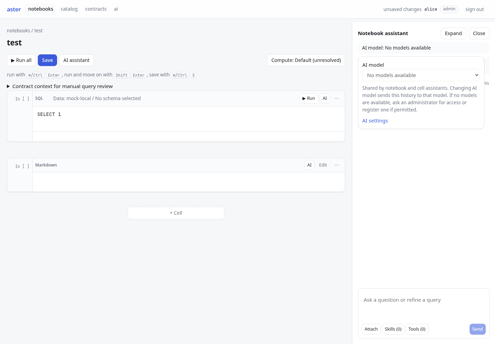
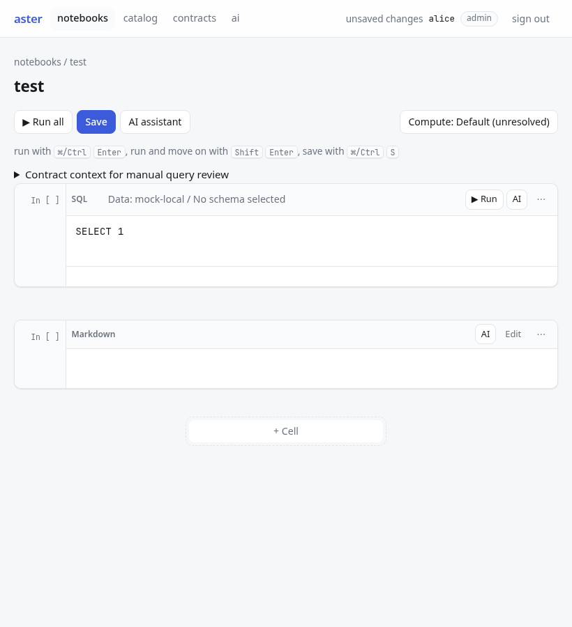
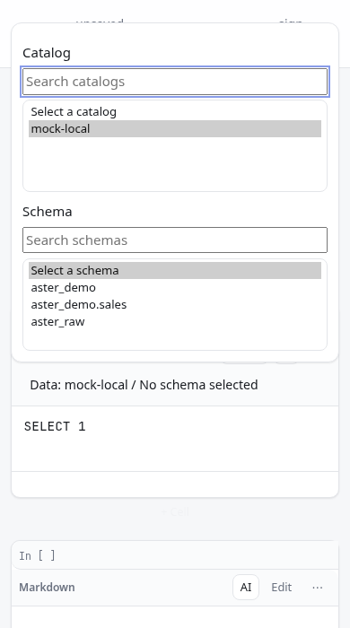
Earlier deployed captures, preserved for comparison.
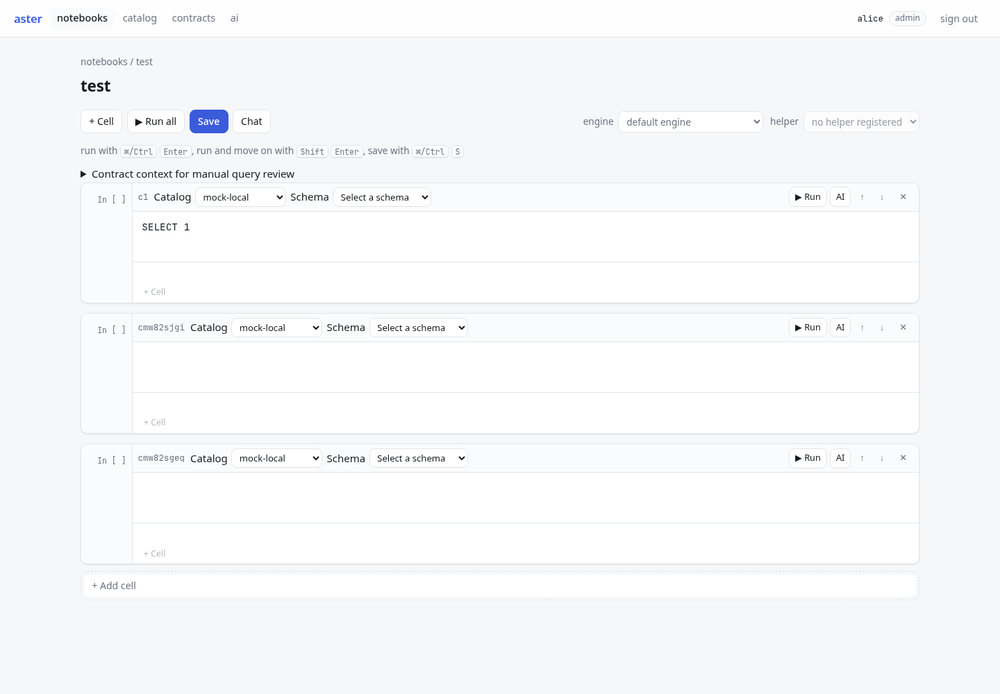
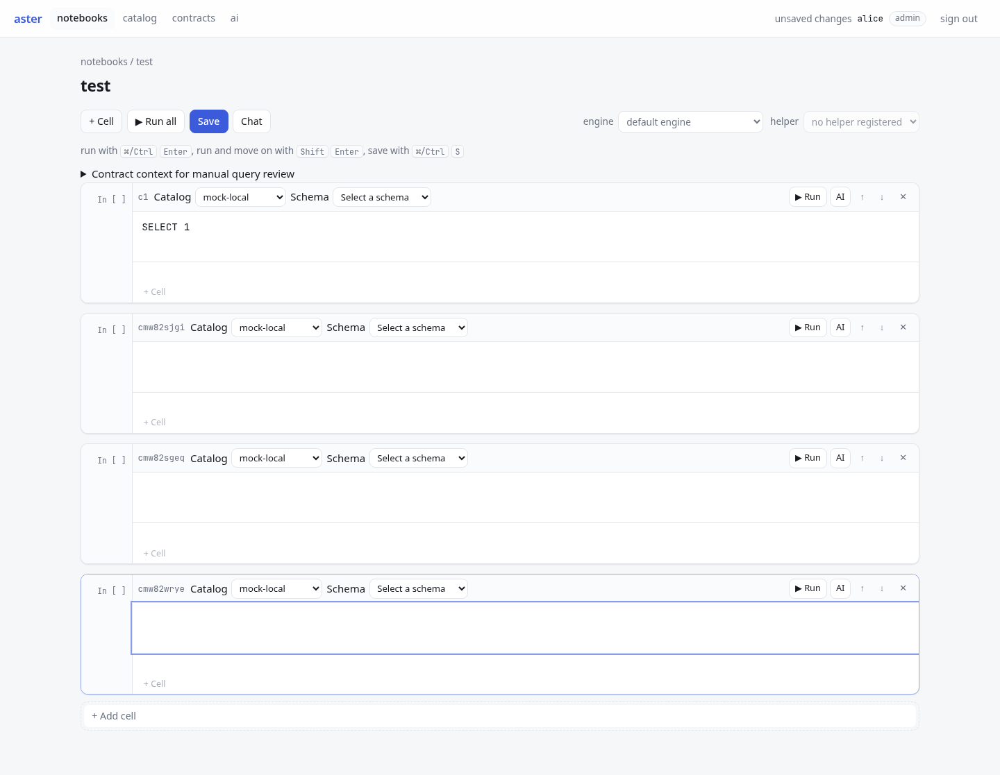
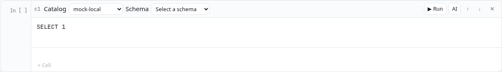
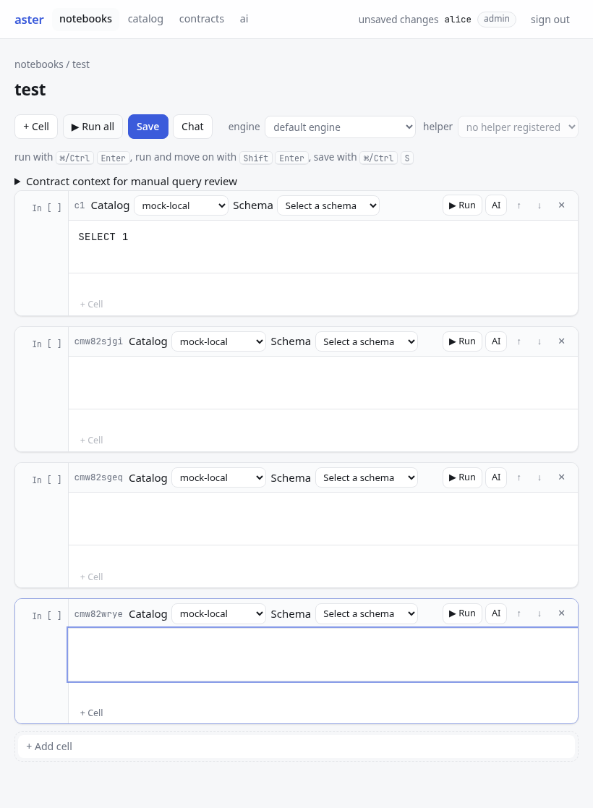
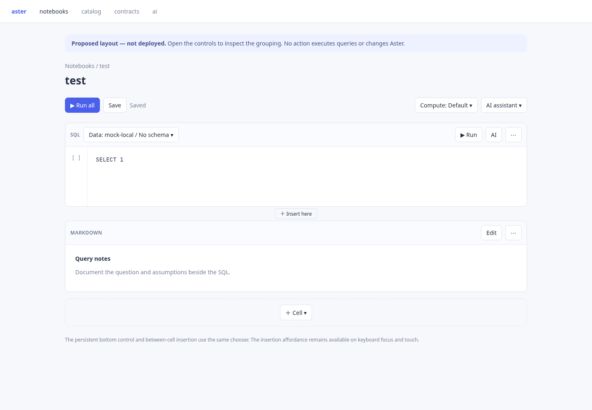